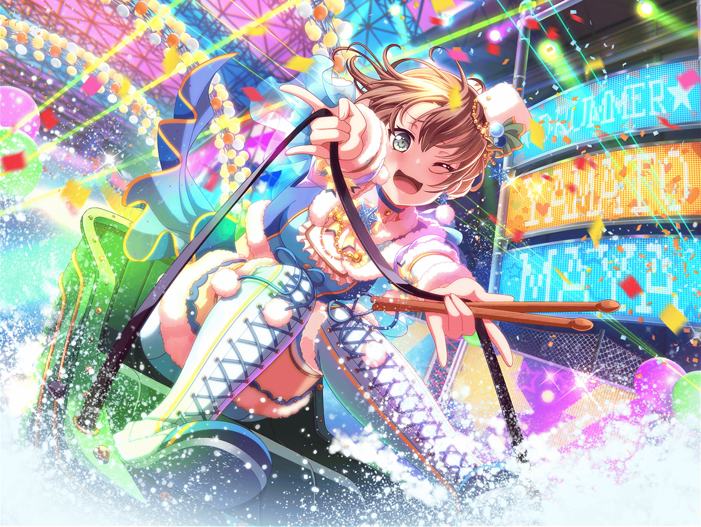

カフェテリア
美咲
あれ？ {{userName}}さん
麻弥
どうも、こんにちは。休憩ですか？
美咲
あたし達はまぁ……
ただおしゃべりに来ただけというか……
あ、ここ座ってもいいですかね
麻弥
失礼します
美咲
え？ あたしと大和さんが２人でいるの、珍しいですか？
麻弥
奥沢さんとは、先日一緒にスキーに行ったんですよ
美咲
それ以来、
ちょこちょここうやっておしゃべりしてるってわけです
麻弥
そういえば、{{userName}}さんはスキーって得意ですか？
麻弥
ジブンは運動音痴で、
スキーもあまり好きじゃなかったので、
最初はスキー場に行くのがちょっと嫌だったんです
美咲
なんかすみません……
あの時は無理に連れて行くような形になって
麻弥
いえいえいえ！
奥沢さんは悪くありません、
それに、今は感謝しているんですから！
美咲
え、どうしてですか？
麻弥
実は……お恥ずかしい話なんですが、
ジブンはスキーをあまりやったことがないのに、
苦手意識だけで避けていたんです
麻弥
だから、ああやってちょっと強引に
連れて行ってもらえなければ、
きっと行かなかったと思います
麻弥
スキー場では、はぐみさんに滑り方を教わって、
ちょっとですけど、滑れるようになって、
スキーって楽しいんだってわかりました
麻弥
そういう機会を作ってもらえたことは、
本当に感謝しています！
美咲
でも、はぐみから教わって滑れるようになる大和さんも、
あたしからするとかなりすごいなって思いますよ
麻弥
ええ！？ どうしてですか？
美咲
ほら、はぐみって感覚でしゃべってるところが
あるじゃないですか。正直、何を言ってるのか
わからなくて、混乱することもあるかなーって
麻弥
そんなことはないですよ。
はぐみさんには改めてお礼を言いたいです！
麻弥
はぐみさんのおかげで、
ちゃんと練習をすれば運動音痴でも
スポーツができるようになるってわかりました
麻弥
これからは、やる前から決めつけないで、
まずはチャレンジしてみようと思います！
美咲
はぐみの教え方で、
ここまでスポーツに対して前向きになれるのもすごいですね。
そう思いません？ {{userName}}さん
麻弥
そうでしょうか？
はぐみさんは、ちゃんとスポーツの面白さを
教えてくれましたから！
美咲
まあ……あんまり無理せずにやったほうがいいですよ。
大和さん、スキーの後にたっくさん
青タン作っていたじゃないですか
麻弥
あははは……お恥ずかしい。
家に帰ったら足がアザだらけで驚きました
美咲
あれだけ転んだらそうなりますよ。
運動するのはいいですけど、ペースは考えてやりましょう
麻弥
そうですね。気をつけたいと思います！
麻弥
{{userName}}さん、
よかったら今度一緒に何かスポーツをしませんか？
もちろん、奥沢さんも一緒に！
美咲
あ、あたしもですか……？
麻弥
はい！
せっかくですから、みんなでやりましょう！
お願いします！
美咲
まあ……そうですね。
じゃあ、タイミングがあったらお願いします。
{{userName}}さん